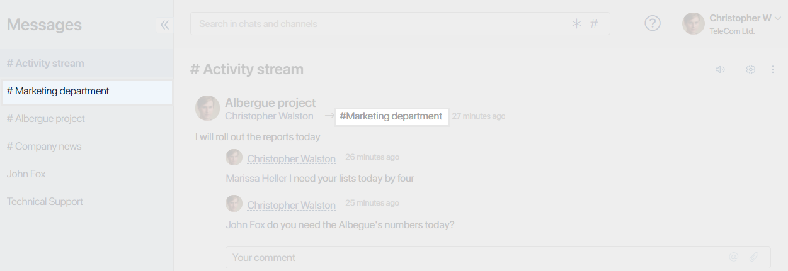
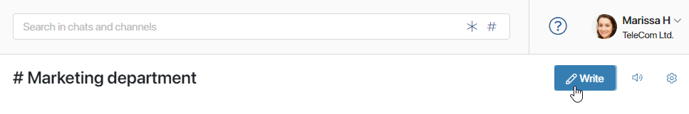
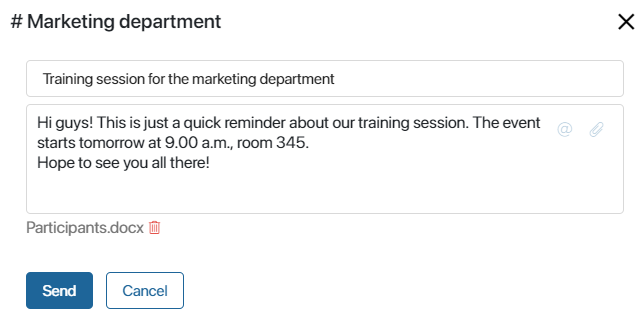
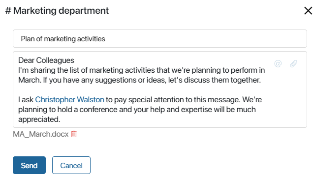
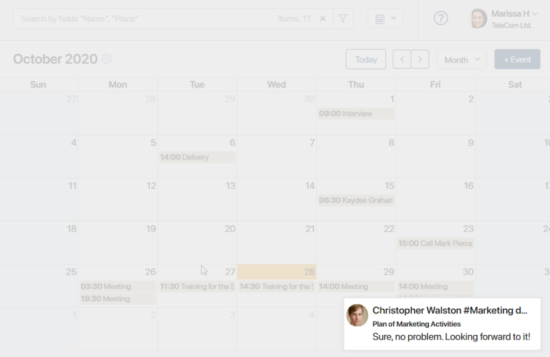
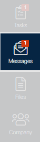
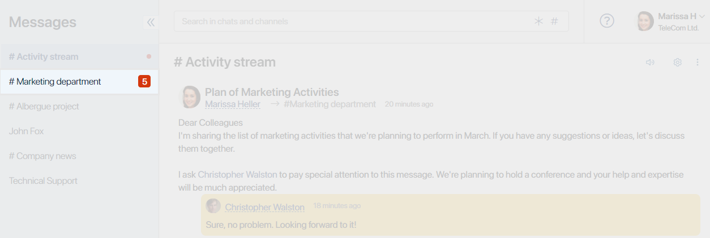
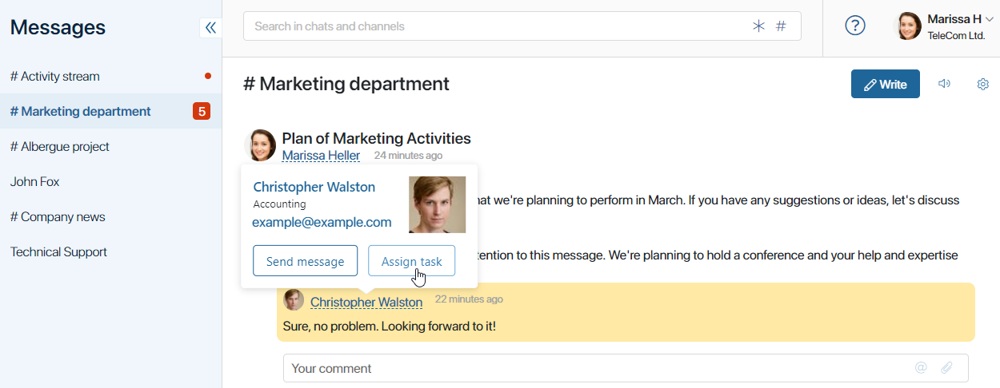

Channels are created to keep employees informed and ensure collaboration within the company, department, or team. Any channel participant can start a discussion, read messages from coworkers, and write comments.
When you open the Messages workspace, you can see the list of your active channels on the left-hand side. The name of a channel always starts with a hash #.
Post in a channel
To send a new message to a channel, go to its page: click on the channel name in the #Activity stream or in the channel list.

On the channel page, in the upper right corner, click the Write button.

In the pop-up window, enter the subject and text of the message. If necessary, add files to the message, such as presentations, documents, or pictures. To do this, click on the paperclip icon in the message field and select one or several files.

Sometimes it is very important to make sure that certain people read a message. In this case, use @mentions to add the name of a specific user to the message text.

@mentions in channels work in the same way as in the #Activity stream and chats. You can learn more about this feature in Mentions.
Notification about a new post in a channel
Participants can learn about new messages in the following ways:
- A pop-up appears in the lower right corner of the screen every time someone writes a new post or leaves comments in the channel.

- On the system's main page. A red indicator with a number next to the Messages workspace title lets you know that there are new messages in a channel. Tip: This counter does not show the total number of new messages, but the number of chats or channels with new posts.

- Next to the channel name in the Messages section. Here the red indicator shows the number of unread messages in the channel.

You can change notification settings for each channel. If you don't want to be disturbed by the pop-up notifications, you can turn them off. To do this, on the channel page, in the upper right corner, click on the horn icon.
начало внимание
If your coworker @mentions you in a message or a comment, you will still receive a pop-up notification even in silent mode.
конец внимание
The following options are also available:
- Mark all messages as read. To do this, click the
 icon in the upper right corner.
icon in the upper right corner. - Move a message to the Favorites folder for quick access later. Click the icon next to the message.
- React to a message or comment. Right-click on the entry and choose an emoji.
Tasks and comments
In channels, as well as in the #Activity stream, you can comment on messages and quickly assign tasks to your coworkers. 
On how to do that, read more in the #Activity stream article.
Find a channel
To quickly find a channel, use the search bar at the top of the Messages section. Enter the first few letters of the channel name and click on the suggestion that appears below the search bar.
To view a list of all channels, click the hash # sign in the right corner of the search bar.